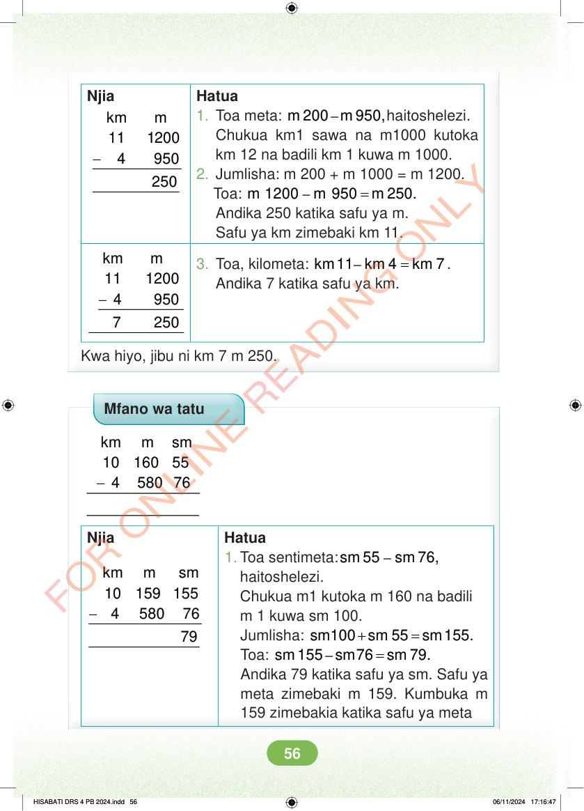

<!DOCTYPE html>
<html lang="sw-TZ"><head><meta charset="utf-8"><meta name="viewport" content="width=device-width,initial-scale=1">
<title>Hisabati: Kitabu cha Mwanafunzi Darasa la Nne</title>
<meta name="title-id" content="pg062_sec001"><meta name="page-section-id" content="65">
<link href="./content/tailwind_output.css" rel="stylesheet"><link href="./assets/libs/fontawesome/css/all.min.css" rel="stylesheet"><link href="./assets/fonts.css" rel="stylesheet">
<style>body{margin:0;background:#eef1ed}main{width:100%;display:flex;justify-content:center;padding:1rem 1rem 5rem;box-sizing:border-box}#content{width:100%;display:flex;justify-content:center}.pdf-page{position:relative;width:min(calc(100vw - 2rem),56rem);aspect-ratio:540.8980102539062/750.6610107421875;background:white;box-shadow:0 4px 24px #0002;overflow:hidden}.pdf-page img{position:absolute;inset:0;width:100%;height:100%;object-fit:fill}</style>
</head><body><main><h1 class="sr-only" id="page-heading">Ukurasa wa 62</h1><div id="content" class="opacity-0"><section role="article" data-section-type="pdf_accessible_page" data-section-id="pg062_sec001" aria-labelledby="page-heading" class="pdf-page"><p class="sr-only" data-id="pg062_gp001_tx001">Njia - km m 11 1200 4 950 Hatua 1. Toa meta: – m 200 m 950,haitoshelezi. Chukua km1 sawa na m1000 kutoka km 12 na badili km 1 kuwa m 1000. 2. Jumlisha: m 200 + m 1000 = m 1200. Toa: – = m 1200 m 950 m 250. Andika 250 katika safu ya m. Safu ya km zimebaki km 11. 3. Toa, kilometa: – = km 11 km 4 km 7 . Andika 7 katika safu ya km. - km m 11 1200 4 950 7 250 Kwa hiyo, jibu ni km 7 m 250. Mfano wa tatu - km m sm 10 160 55 4 580 76 Njia - km m sm 10 159 155 4 580 76 Hatua 1. Toa sentimeta: – sm 55 sm 76, haitoshelezi. Chukua m1 kutoka m 160 na badili m 1 kuwa sm 100. Jumlisha: + = sm100 sm 55 sm 155. Toa: – = sm 155 sm76 sm 79. Andika 79 katika safu ya sm. Safu ya meta zimebaki m 159. Kumbuka m 159 zimebakia katika safu ya meta HISABATI DRS 4 PB 2024.indd 56 HISABATI DRS 4 PB 2024.indd 56 06/11/2024 17:16:47 06/11/2024 17:16:47</p></section></div></main><div class="relative z-50" id="interface-container"></div><div class="relative z-50" id="nav-container"></div><script src="./assets/offline-preloader.js?v=audiofix-20260824-1"></script><script src="./assets/scorm.js"></script><script src="./assets/base.bundle.local.js?v=audiofix-20260824-1"></script></body></html>